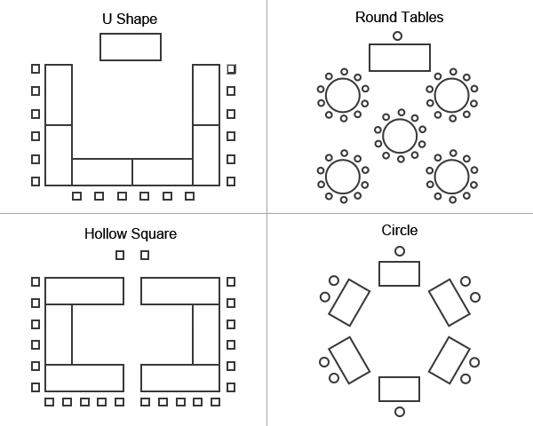

Home / My Interest List / Catalog Search / Resources / Help
Now that you have completed the foundational steps for a quality training session, the next phase is effective delivery.
As discussed in the previous step, the training facilities should have sufficient resources and equipment to perform classroom and activity-based learning in a setting conducive to effective learning. However, often such facilities are not available and instructors find themselves having to make do and adapt to training in the environment they are given.
An important element to effective delivery is the instructor-trainee ratio. Class sizes of about 25 people (or less) usually work best with two instructors, especially when incorporating activity-based learning into the training experience. When class size exceeds 30 people, it is advisable to consider providing a third instructor and divide the class into two sections during instruction.
Another important factor to consider is room layout. The following layouts are suggested to maximize student participation and the overall learning experience:
Just prior to the session start, help ensure the following logistics:
- Classroom set up is appropriate (classroom style, team table format, etc.).
- All materials are onsite; materials should be placed at each participant seat (including tent cards, if used).
- All A/V aids are present and in working order.
- All additional supplies are on hand (e.g., tape, flipchart markers, erasers, pads, pencils, etc.).
- All food/catering arrangements are adequate and in accordance with agreed upon requirements.
During the session, some important tips include:
- Set the ground rules with the participants, including expected behavior.
- Overview your instructional style and participant interaction expectations.
- Solicit participant's course expectations, comparing those expectations to the course objectives; clearly outline those expectations that may not be covered in the course.
- Cover logistical information including restroom location(s), smoking policy, break times, etc.
- Outline the day's agenda, including lunch and break times.
Facilitating the session appropriately is critical to the program success. All instructors should be thoroughly knowledgeable about the content, as well as the training material itself. Strong presentation skills are important, as well as the ability to manage group dynamics. Refer to Platform Skills for some tips and techniques on effectively leading a training session. In addition, KPMG has two training courses to help prepare our professionals for the important task of leading training sessions. Please contact the KPMG Learning Management Team for information on the KPMG Presentation Skills course or the KPMG Facilitation Skills course.